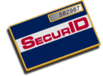

WebID Authentication
Getting Started
Overview - Read Me First!
Your Responsibilities as a
SecurID Tokenholder
Obtaining PIN Information from
Your Administrator
Duress PINs
How
to . . .
Associate a PIN with Your Token
Authenticate with a PINPAD
Authenticate with a Standard
SecurID Card or Key Fob
Authenticate with a SoftID